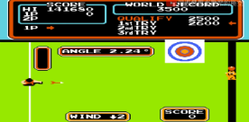
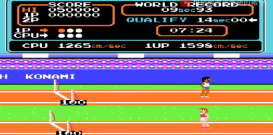

| 個人企劃 – 斯伯特運動會 |
| 前情提要 | 劇情 | 遊戲介紹 | 角色設計 | 玩法 | 參考 |
| 首頁 | 個人企劃書 | 個人簡報 |
| 前情提要 |
○ 為什麼想做這份遊戲？
| 想做這份遊戲的契機是為了復刻童年，除了傳承外，希望能對曾經喜歡過的遊戲加以創新，成為一個極具特色又不失傳統的遊戲。 |
| 劇情 |
四個班長為了爭奪班級榮譽，決定在此次的運動會上大展身手，為了班上拿下第一名。
| 遊戲介紹 |
一、核心概念
| 1.
核心樂趣 : (1) 多人競速對戰 : 與朋友或家人比拚手速與操作反應，擁有競賽樂趣。 (2) 單人挑戰紀錄 : 玩家可以挑戰自己或排行榜紀錄，附有成就感。 2. 主要特色 : (1) 懷舊復刻 : 致敬紅白機經典運動會遊戲，保留原始特色。 (2) 創新元素 : 加入地圖、新關卡或操作方式，使比賽變得比原本更豐富有趣。 (3) 公平競速 : 操作決定勝負，適合喜歡技術挑戰的玩家。 (4) 遊戲體驗目標 : 讓玩家體驗「懷舊樂趣+現代體驗手感」讓朋友或家人聚在一起也能玩得開心，或單獨挑戰自我紀錄。 |
-------------------------------------------------------------------------------------------------------------------------------------------------------------------------------------------------------------------------------------------------------------------------------
二、遊戲玩法
1. 比賽項目(1) 必做項目
(2) 額外挑戰
(3) 趣味項目
2. 遊戲模式設計(1) 單人模式
(2) 多人模式
|
三、遊戲流程
遊戲流程概覽
關卡設計短跑
障礙賽
跳遠 / 跳高
鉛球 / 標槍
射鏢
|
| 角色設計 |
| 一班 | 二班 | 三班 | 四班 |
 |
 |
 |
 |
| 遊戲玩法 |
|
 |
| 參考 |
|
 |
 |